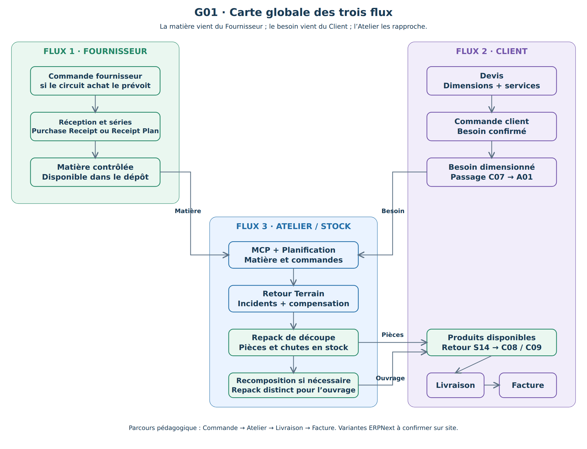
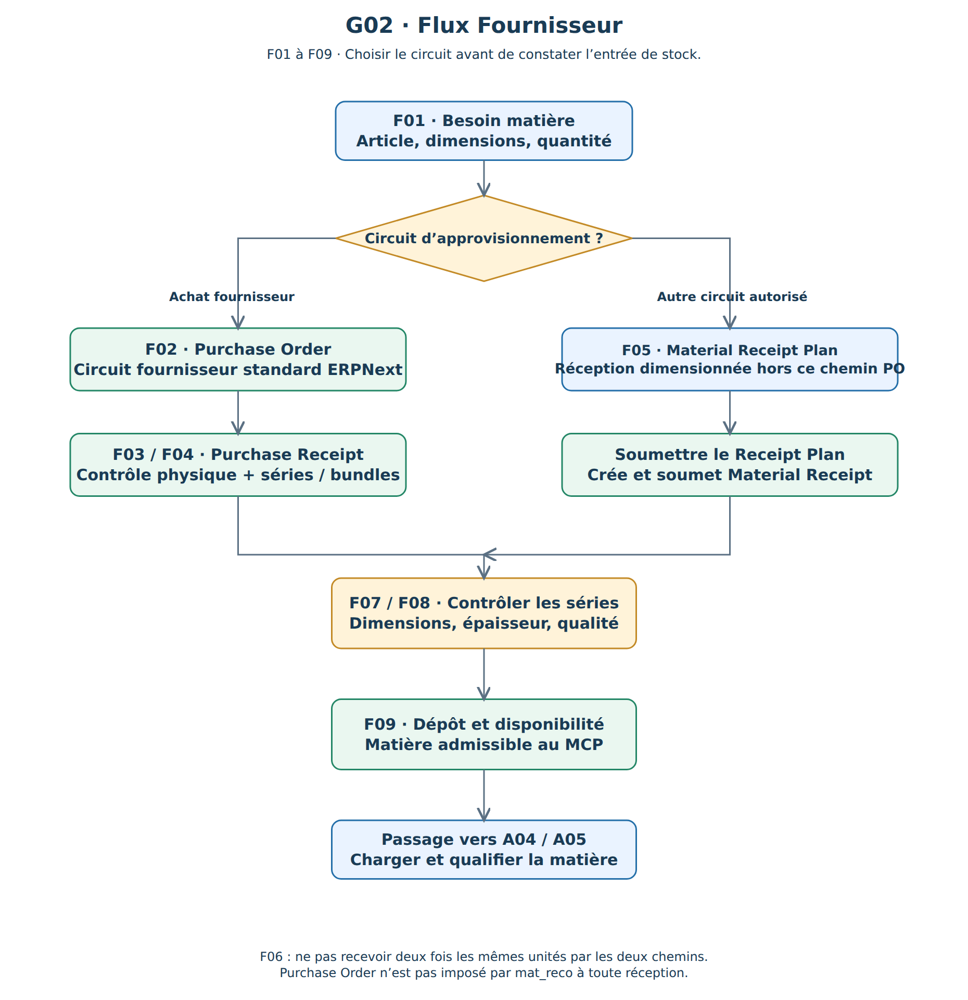
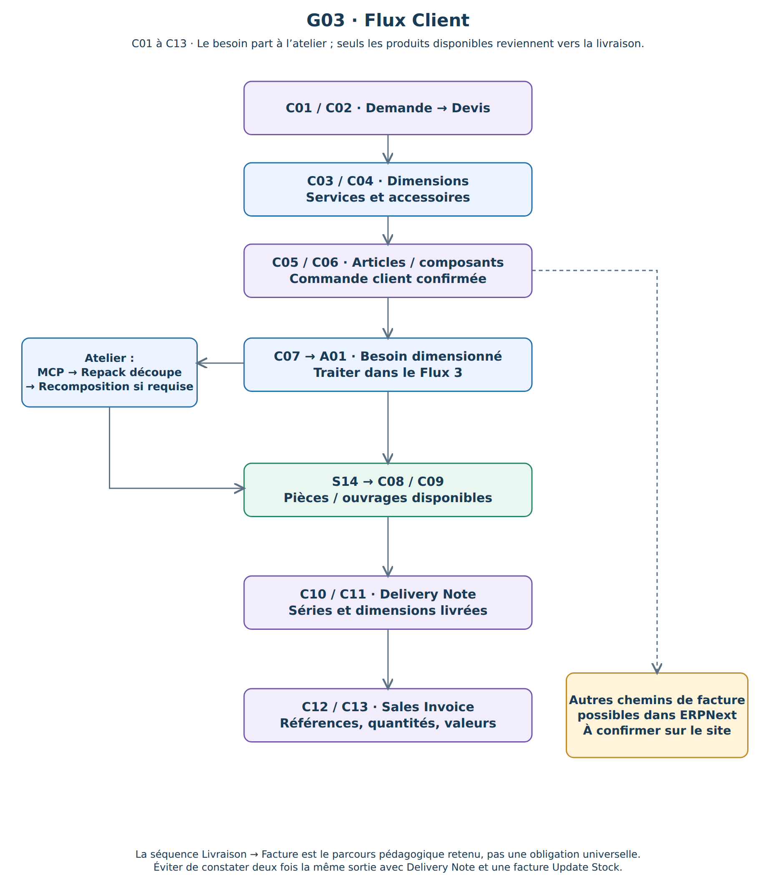
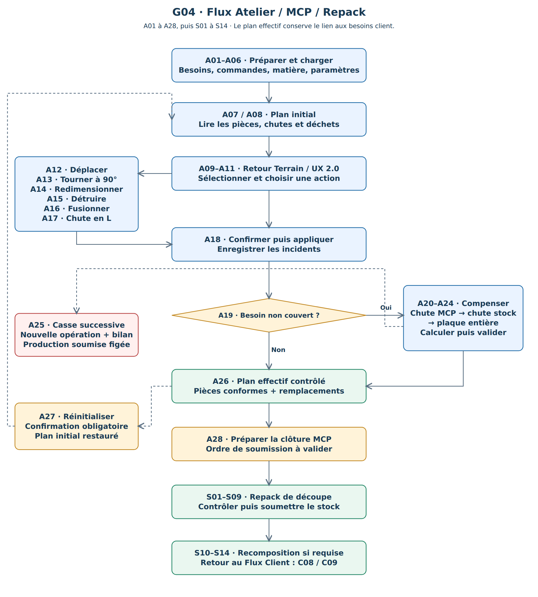
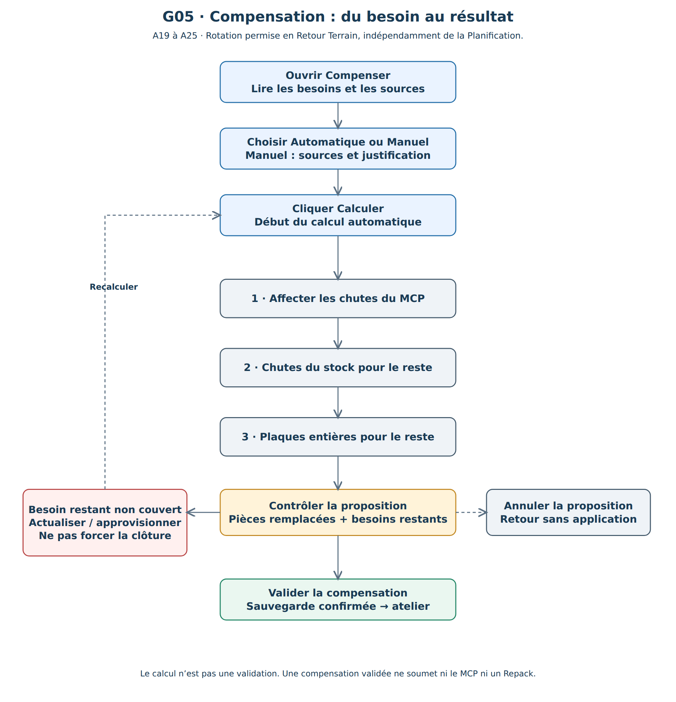
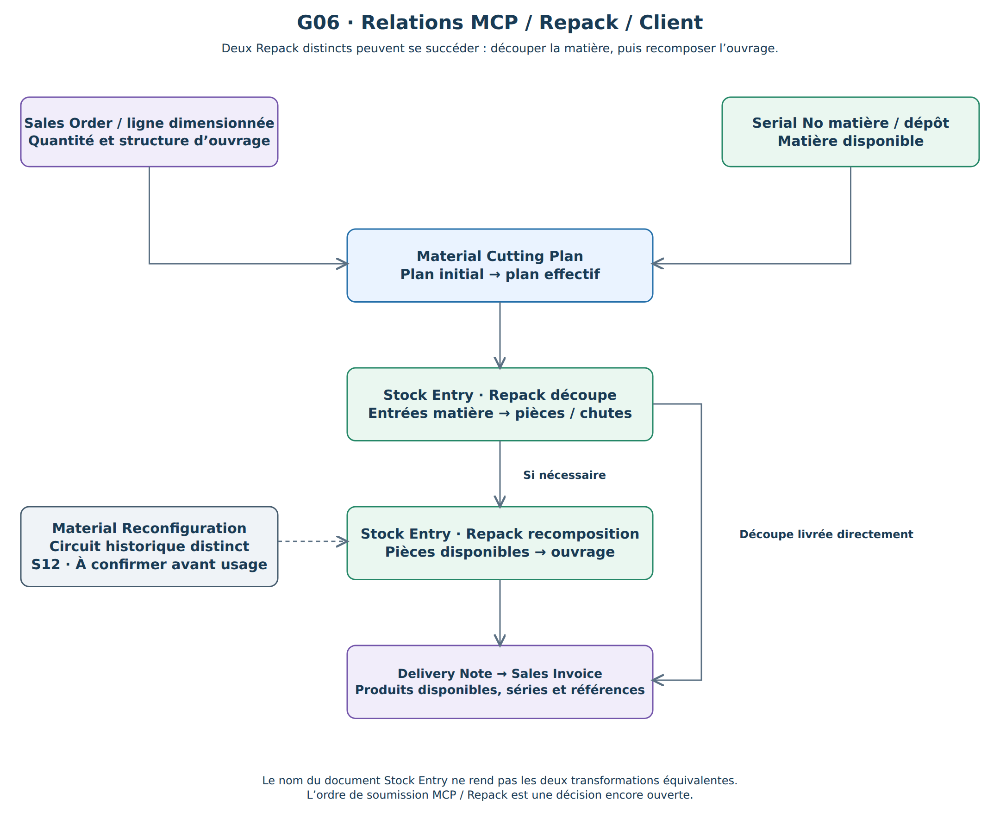
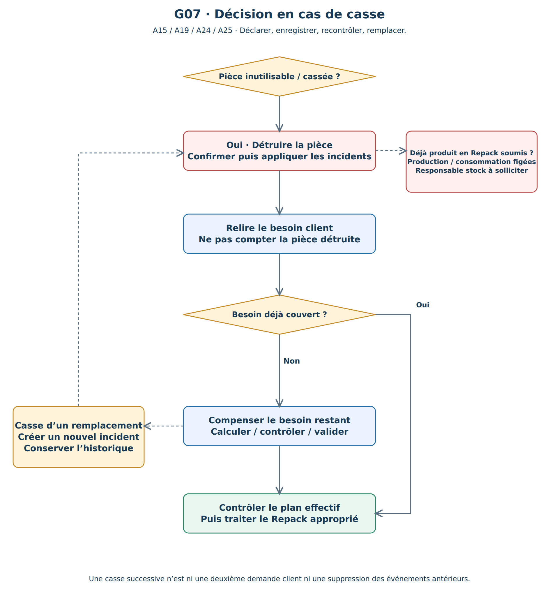

Base de lecture et de validation des trois parcours convergents.
Les schémas servent de carte du manuel. Le fournisseur apporte la matière, le client exprime le besoin et le Flux 3 les rapproche. Le Repack de découpe et celui de recomposition sont distincts. Les responsabilités et l’ordre de soumission restent à approuver.






